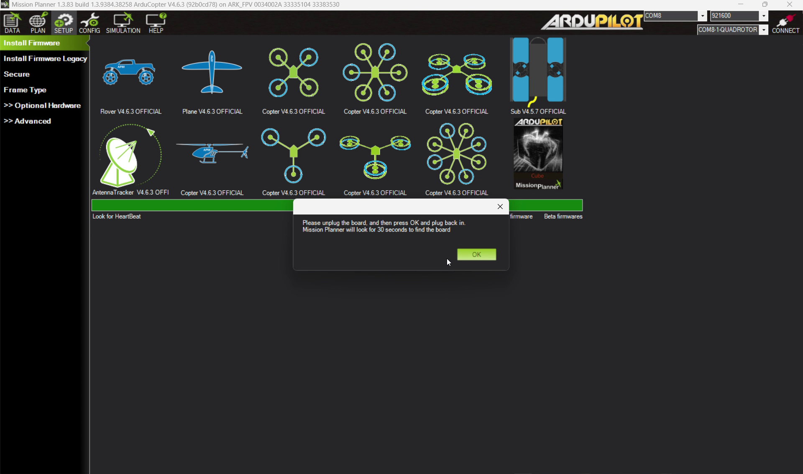
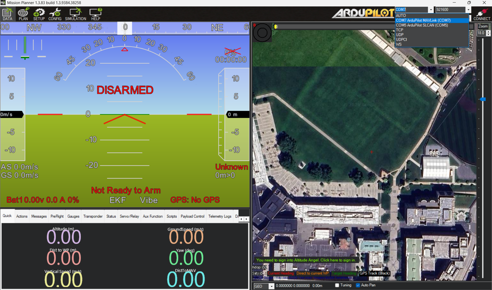
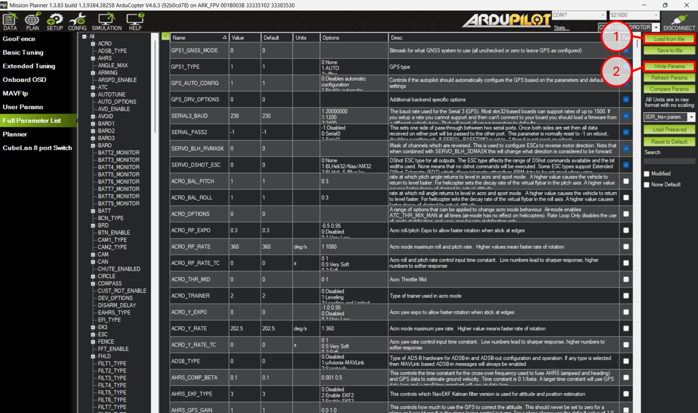

Task 12: Install firmware and load parameter file
Install ArduCopter firmware on the flight controller, then load the faculty-issued parameter file.
Parts required
- Vehicle with the FC, ESC, and camera/GPS mount installed
Tools required
- USB-C cable
- PC running Mission Planner
Short read: firmware vs. parameters.
Firmware is the low-level software that runs on the flight controller itself. It tells the board how to behave as an autopilot. The parameter file is a preset list of configuration values loaded after the firmware is installed. In this task, you will first install the correct ArduCopter firmware, then load the faculty-issued HAMR II parameter file.
Firmware is the low-level software that runs on the flight controller itself. It tells the board how to behave as an autopilot. The parameter file is a preset list of configuration values loaded after the firmware is installed. In this task, you will first install the correct ArduCopter firmware, then load the faculty-issued HAMR II parameter file.
Parameter file.
Download the current faculty-issued preset parameter file here: 20260429 HAMR II Rev2.param.
Download the current faculty-issued preset parameter file here: 20260429 HAMR II Rev2.param.
Step 1. Install firmware
- Connect the USB-C cable between the PC and the flight controller.
- Be gentle with the USB-C cable and connector. Do not twist the cable, pry on the connector, or let the cable side-load the board. The USB-C receptacle can be pulled off the flight controller entirely if mishandled.
- Open Mission Planner.
- Along the left side of the Mission Planner window, click SETUP. In the setup pane, click Install Firmware. See Fig. 12a.
- In the main firmware area, click Copter V4.6.3 OFFICIAL. This button is in the center of the screen. See Fig. 12a.
- When the Continue dialog appears in the middle of the screen, click Yes.
- Follow the firmware upload path that Mission Planner presents:
- Normal path: when the unplug/replug prompt appears in the middle of the screen, click OK, unplug the flight controller, and plug it back in promptly. See Fig. 12b. Wait for Mission Planner to begin the upload. Continue waiting until the status window shows activity such as Downloading from the Internet and the progress bar starts moving. Then keep waiting until Mission Planner reports Upload Done.
- Retry path: if Mission Planner instead shows a failed port-detect condition like Fig. 12c, or reports that it found the board type but does not actually start the upload, restart the firmware install by clicking Copter V4.6.3 OFFICIAL again from Fig. 12a and repeat the process.
- After Upload Done, unplug the flight controller and plug it back in again.
- In the upper-right corner of the Mission Planner window, open the port dropdown and select the COM-port entry that includes ArduPilot MAVLink. Then set the adjacent baud-rate dropdown to 921600 and click CONNECT. See Fig. 12d.

Fig. 12a. In the SETUP pane, click Install Firmware, then select Copter V4.6.3 OFFICIAL from the main firmware area.

Fig. 12b. Normal firmware path. Click OK, then unplug and replug the flight controller when prompted.

Fig. 12c. Retry path. If Mission Planner does not proceed with the upload, restart the firmware install from Copter V4.6.3 OFFICIAL.

Fig. 12d. After firmware installation, reconnect through the upper-right connection controls. Select the correct port entry that includes ArduPilot MAVLink, set 921600, and click CONNECT.
Step 2. Load parameter file
- On the top menu bar, click CONFIG.
- In the left-side configuration menu, click Full Parameter List. See Fig. 12e.
- On the right side of the Full Parameter List page, click Load from file.
- Select
20260429 HAMR II Rev2.param. - If one or more Read Only dialogs appear, click OK on each of them.
- After the file finishes loading, click Write Params on the right side of the page.
- When the Confirm Parameter Changes dialog appears, click Yes.
- When the Saved dialog appears, click OK.
- When the Reboot Required dialog appears, click OK.
- Unplug the flight controller and plug it back in.
- In the upper-right corner, click CONNECT again to reconnect to the flight controller.

Fig. 12e. Parameter-file workflow. Open CONFIG → Full Parameter List, load the Rev1 parameter file, acknowledge any Read Only prompts, click Write Params, then acknowledge Saved and Reboot Required before unplugging/replugging and reconnecting.
Common errors
- Selecting the wrong firmware target instead of Copter V4.6.3 OFFICIAL.
- Handling the USB-C cable roughly and damaging the connector.
- Seeing the retry condition and assuming the board is permanently bad instead of restarting the firmware installation.
- Connecting to the wrong top-right port entry or missing the fact that it should say ArduPilot MAVLink.
- Using the wrong baud rate instead of 921600.
- Loading the parameter file but forgetting to click Write Params.
- Clicking through the prompts but not unplugging and replugging the flight controller after Reboot Required.
- Forgetting to click CONNECT again after the reboot.